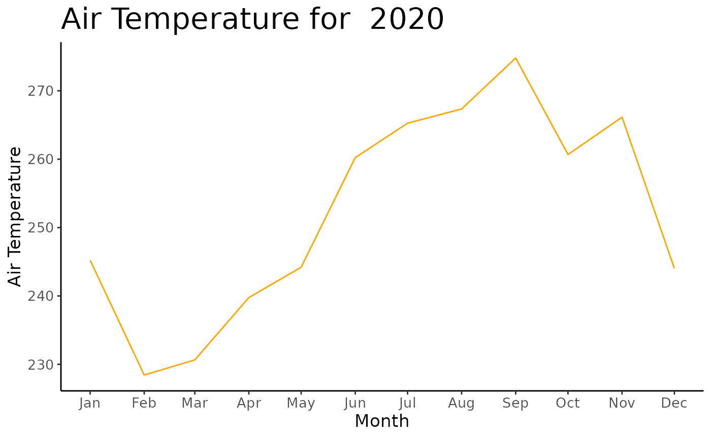

You can install the development version of this package from Github with:
install.packages("devtools")
devtools::install_github("UBC-MDS/noaastnr")Typical usage will begin with downloading the list of available weather stations in the country of interest using the get_stations_info() function. A dataframe is returned which can be reviewed to find a suitable station in the area of interest. Alternatively, the NOAA provides a graphical interface for exploring the available weather stations.
get_stations_info(country = "US")
#> # A tibble: 7,158 x 11
#> usaf wban station_name country state call latitude longitude elevation
#> <chr> <chr> <chr> <chr> <chr> <chr> <chr> <chr> <chr>
#> 1 621010 99999 MOORED BUOY US <NA> <NA> +50.600 -002.933 -0999.0
#> 2 621110 99999 MOORED BUOY US <NA> <NA> +58.900 -000.200 -0999.0
#> 3 621130 99999 MOORED BUOY US <NA> <NA> +58.400 +000.300 -0999.0
#> 4 621160 99999 MOORED BUOY US <NA> <NA> +58.100 +001.800 -0999.0
#> 5 621170 99999 MOORED BUOY US <NA> <NA> +57.900 +000.100 -0999.0
#> 6 621220 99999 MOORED BUOY US <NA> <NA> +56.500 +002.017 -0999.0
#> 7 621250 99999 MOORED BUOY US <NA> <NA> +53.800 -003.800 -0999.0
#> 8 621260 99999 MOORED BUOY US <NA> <NA> +53.800 -003.600 -0999.0
#> 9 621300 99999 MOORED BUOY US <NA> <NA> +53.000 +001.700 -0999.0
#> 10 621370 99999 PLATFORM NO. 6… US <NA> <NA> +57.350 +001.467 +0000.0
#> # … with 7,148 more rows, and 2 more variables: start <dttm>, end <dttm>After selecting a weather station number, the get_weather_data() function can be used to download various weather parameters for the station number and year of interest. The following usage example downloads weather data from station number “911650-22536” for the year 2020 and saves the data to a variable called ‘weather_data’. ‘weather_data’ will be a data frame containing a time series of the following parameters for the station and year of interest:
weather_data <- get_weather_data("911650-22536", 2020)
weather_data
#> # A tibble: 16,211 x 6
#> stn datetime air_temp atm_press wind_spd wind_dir
#> <chr> <dttm> <dbl> <dbl> <dbl> <dbl>
#> 1 911650-22536 2020-01-01 00:00:00 261 1019. 7.2 90
#> 2 911650-22536 2020-01-01 00:53:00 272 1019. 6.7 80
#> 3 911650-22536 2020-01-01 01:51:00 260 NA 6.7 80
#> 4 911650-22536 2020-01-01 01:53:00 261 1019. 7.7 80
#> 5 911650-22536 2020-01-01 02:51:00 260 NA 7.7 90
#> 6 911650-22536 2020-01-01 02:53:00 256 1019. 7.7 90
#> 7 911650-22536 2020-01-01 03:53:00 256 1019. 8.2 80
#> 8 911650-22536 2020-01-01 04:53:00 250 1020. 8.8 100
#> 9 911650-22536 2020-01-01 05:53:00 250 1020. 9.3 90
#> 10 911650-22536 2020-01-01 06:00:00 250 1020. 9.3 90
#> # … with 16,201 more rowsThe function plot_weather_data() can be used to visualize a time series of any of the available weather parameters either on a mean daily or mean monthly basis. The function returns an Altair chart object which can be saved or displayed in any environment which can render Altair objects.
# weather_data <- get_weather_data("911650-22536", 2020)
plot_weather_data(weather_data, col_name="air_temp", time_basis="monthly")